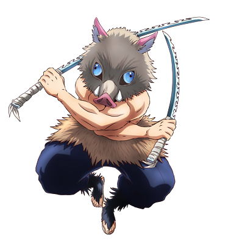

Inosuke Hashibira is one of the main characters of the anime Kimetsu no Yaiba. He is a Demon Hunter belonging to the Demon Extermination Corps, creator of the Breath of the Beast. Inosuke is a young man of average height. He always wears a mask made from the head of a wild boar with gray fur and blue eyes. Instead of wearing the standard Demon Hunter uniform, she wears a black Hakama with a skirt made of fur at the waist protecting her groin and genitals. Not wearing the jacket of the average demon hunter uniform, he showed off his torso which had a completely muscular and toned appearance. When he was not wearing his Boar mask, Inosuke's face was that of an effeminate-looking young man with short dark hair with faded extensions in shades of blue and green eyes with thick eyelashes accentuating his face with feminine features.
